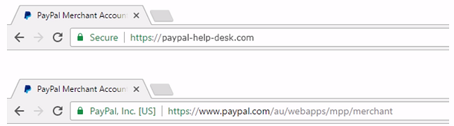

Https Explainations¶
Hypertext Transfer Protocol Secure (HTTPS) is a safer version of HTTP, which is the communications protocol of the World Wide Web. An HTTPS session is encrypted using either the SSL protocol (Secure Socket Layer) or TLS protocol (Transport Layer Security) and offers protection against “eavesdropping” and that any change in the transmitted data.
Introduction¶
First Man in the middle attack in Chinese history. From “资治通鉴”:
春，黑山贼帅张燕与公孙续率兵十万，三道救之。 未至，瓒密使行人赍书告续，使引五千铁骑于北隰之中，起火为应，瓒欲自内出战。 绍候得其书，如期举火。 瓒以为救至，遂出战。 绍设伏击之，瓒大败，复还自守。
Man in the middle attack will cause a lot of damage.
In the web/cloud world, typical “Man in the middle Insertion” points can be the following options:
- Browser
- Wireless Router
- ISP
- Web Server
SSL: Secure Sockets Layer TLS: Transport Layer Security
SSL and TLS are both cryptographic protocols that provide authentication and data encryption between servers, machines and applications operating over a network. SSL is the predecessor to TLS.
Technical Details¶
TLS handshake¶
- The client sends a “Client hello” message to the server, along with the client’s random value and supported cipher suites.
- The server responds by sending a “Server hello” message to the client, along with the server’s random value.
- The server sends its certificate to the client for authentication and may request a certificate from the client. The server sends the “Server hello done” message.
- If the server has requested a certificate from the client, the client sends it.
- The client creates a random Pre-Master Secret and encrypts it with the public key from the server’s certificate, sending the encrypted Pre-Master Secret to the server.
- The server receives the Pre-Master Secret. The server and client each generate the Master Secret and session keys based on the Pre-Master Secret.
- The client sends “Change cipher spec” notification to server to indicate that the client will start using the new session keys for hashing and encrypting messages. Client also sends “Client finished” message.
- Server receives “Change cipher spec” and switches its record layer security state to symmetric encryption using the session keys. Server sends “Server finished” message to the client.
- Client and server can now exchange application data over the secured channel they have established. All messages sent from client to server and from server to client are encrypted using session key.
Redirect to HTTPS¶
If your web site upgrade to https from http, you can do Redirecting to https:
- Client send http request
- Server return HTTP 301 (Moved Permanently)
- Client starts https request
However, redirecting model has “Man in the middle” risk, not safe.
Strict Transport Security¶
A safer way is to use HTTP strict transport security (HSTS). Force all the http requests converted into https, including CSS, Javascript, fonts, images, favicon, media, etc.
You will not see 301 response, but the following content in the header:
Strict-Transport-Security:
max-age=15552000;
Go to HTTP site again, and you will get response 307 (Temporary Redirect).
If there is Man in the middle attack, client may never receive response 307. A even safer way is to make reloaded.
strict-transport-security: max-age=31536000; includeSubDomain;preload
The relevant website is: https://hstspreload.org/
Mixed Content¶
If your page contains unsecure resource, e.g. images, videos in iframe, https is not impleted correctly.
If you just use //www.resourceaddress in your code, then it will ‘inherit’ the parent scheme when get the resource.
Alternative solution is to use Content Security Policy (CSP).

Content Security Policy (CSP) is a computer security standard introduced to prevent cross-site scripting (XSS), clickjacking and other code injection attacks resulting from execution of malicious content in the trusted web page context.
Extended validation certificate¶
An Extended Validation Certificate (EV) is a certificate used for HTTPS websites and software that proves the legal entity controlling the website or software package. Obtaining an EV certificate requires verification of the requesting entity’s identity by a certificate authority (CA).
Certificate¶
When a web server is set up to accept https connections, the administrator must create a digital certificate for the web server. This certificate must then be signed by a certificate authority. This proves that the certificate owner is really the entity it states to be. Browsers are generally distributed with the signing certificates of known certificate authorities in order to verify that the certificates were really signed by them.
Downgrade communication protocol¶
One possible attack of https will be the client try to downgrade the communication version. Client claims it only has lower TLS version, and force the communication to be on lower version. Then use the opportunity to attack with the known vulnerabilities.
Tools relevant¶
PowerShell cmlet¶
New-SelfSignedCertificate, Export-PfxCertificate can generate certificate locally (pfx file)
To be used for release signing, a Software Publisher Certificate (SPC), and its private and public keys, must be stored in a Personal Information Exchange (.pfx) file. However, some certificate authorities (CAs) use different file formats to store this data. For example, some CAs store the certificate’s private key in a Private Key (.pvk) file and store the certificate and public key in a .spc or .cer file.
Fiddler¶
Port 443 is the default port for https.
By default, Fiddler can monitor http very well, but not https. Fiddler almost can see no communication if visit https websites.
Check on the following options in Fiddler can see the https communication: HTTPS tab, Decrypt HTTPS traffic. What Fiddler will do is a man in the middle attack on the machine.
Relevant websites¶
- https://badssl.com/
- Web page to see the browser for various features: http://caniuse.com
- You can see https is faster to load: httpvshttps.com. F12 -> Network -> Waterfall, the reason is https allows streaming content come all together.
- Certificate is not free. But you can use Let’s encrypt: letsencrypt.org
- certbot.eff.org can automate the certificate process
- Cloudflare: Can handle https for you easier.
- Test how well you implement ssl: www.ssllabs.com
- HTTPS improves SEO: https://webmasters.googleblog.com/2014/08/https-as-ranking-signal.html
Written by Binwei@Oslo